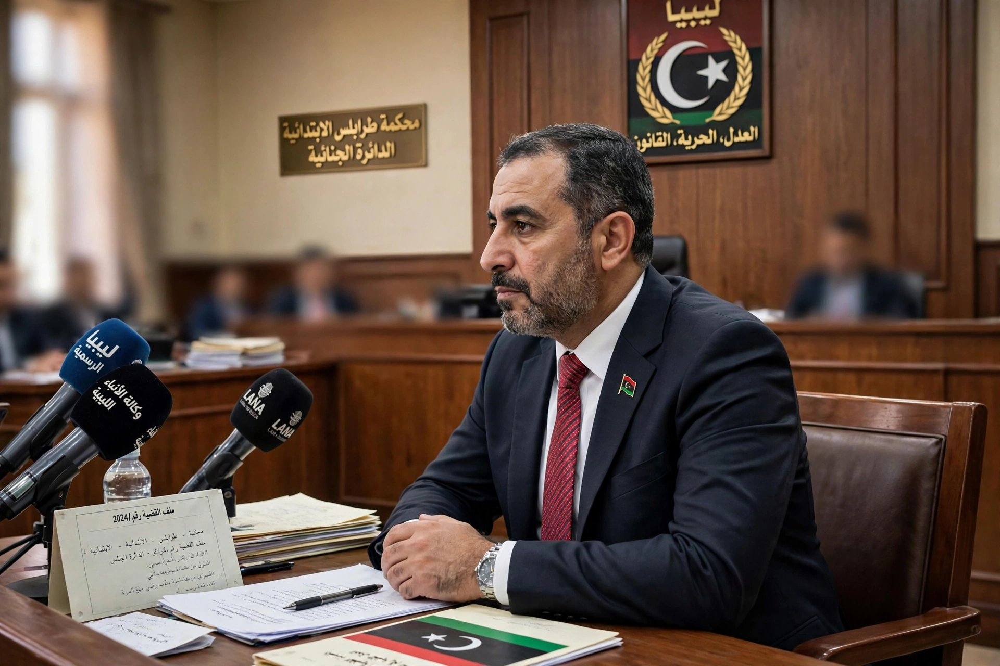

| Abdelbaset Ali Mohmed al-Megrahi | |
|---|---|
| Born | 1 April 1952, Tripoli, Libya |
| Died | 20 May 2012 (aged 60), Tripoli, Libya |
| Occupation | Libyan intelligence officer; airline security official |
| Criminal charge | Murder (270 counts), conspiracy, aviation offences |
| Penalty | Life imprisonment (released 2009, compassionate grounds) |

Abdelbaset Ali Mohmed al-Megrahi (1 April 1952 – 20 May 2012) was a Libyan intelligence officer who was convicted in 2001 of the bombing of Pan Am Flight 103 over Lockerbie, Scotland, in 1988, in which 270 people died. He is the only person ever convicted in connection with the attack.
Megrahi, head of security for Libyan Arab Airlines, was indicted by Scottish and American prosecutors in 1991. After years of sanctions and negotiation, Libya surrendered him for trial in 1999. A special Scottish court at Camp Zeist in the Netherlands convicted him in January 2001 and sentenced him to life imprisonment; his co-accused, Lamin Khalifah Fhimah, was acquitted.
Megrahi maintained his innocence, and his conviction was criticised by some observers and victims' relatives. In August 2009 the Scottish justice secretary released him on compassionate grounds after he was diagnosed with terminal prostate cancer, and he returned to a hero's welcome in Libya — a decision that caused a diplomatic row. He survived nearly three years, dying in Tripoli in May 2012. The Scottish Criminal Cases Review Commission later referred his case for a further appeal, heard posthumously, which was refused in 2021.